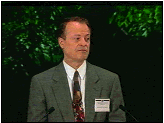
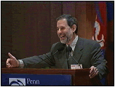
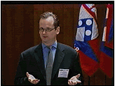

| |
Note: To view our streaming video, you must first download and install the free RealVideo plugin, available at http://www.real.com |
Keynote Address Judith Rodin
President, University of Pennsylvania
Standard Dial-Up Modem (28.8 kbps)
High Speed ISDN-or-better (112 kbps)
Affirmative Action and the Culture of Intolerance Christopher Edley, Jr.
Professor of Law, Harvard University
Standard Dial-Up Modem (28.8 kbps)
The Market, The State, and the Dynamics of Public Culture Kevin Phillips
Editor and publisher of The American Political Report, syndicated columnist
Standard Dial-Up Modem (28.8 kbps)
High Speed ISDN-or-better (112 kbps)
Immigration and the Fracturing of Community Richard Rodriguez
Author, PBS Commentator
Standard Dial-Up Modem (28.8 kbps)
High Speed ISDN-or-better (112 kbps)
Campaign Reform and the Failure of Leadership Paul Taylor
Journalist, Organizer of "Free Time for Straight Talk"
Standard Dial-Up Modem (28.8 kbps)
High Speed ISDN-or-better (112 kbps)

Professional Sports and Public Behavior Richard Lapchick
Director, Center for the Study of Sport in Society
56 Dial-Up Modem
High Speed ISDN-or-better (112 kbps)
The University and Public Behavior Judith Rodin
President, University of Pennsylvania
56 K Dial-Up Modem
High Speed ISDN-or-better (112 kbps)
The Military and Public Behavior Julius Becton, Jr.
Lt. General, U.S. Army (ret.)
Standard Dial-Up Modem (28.8 kbps)
High Speed ISDN-or-better (112 kbps)
Government and Public Behavior
Bill Bradley
Former Senator, New Jersey
56 K Dial-Up Modem
High Speed ISDN-or-better (112 kbps)
Exemplary Discourse on Affirmative Action Led by Drew Faust (University of Pennsylvania)
With the Membership of the Penn National Commission
PART ONE: Standard Dial-Up Modem (28.8 kbps)
PART ONE: High Speed ISDN-or-better (112 kbps)
PART TWO: Standard Dial-Up Modem (28.8 kbps)
PART TWO: High Speed ISDN-or-better (112 kbps)
National Leadership and the Conversation on Race
William Gray and Ward Connerly
Moderated by Cass Sunstein (University of Chicago)
PART ONE: Standard Dial-Up Modem (28 kbps)
National Leadership and the Conversation on Race
William Gray and Ward Connerly
Moderated by Cass Sunstein (University of Chicago)
PART TWO: Standard Dial-Up Modem (28 kbps)

The Context of Public Discourse Led by Robert Wiebe (Northwestern University)
With Jonathan Franzen, Samuel Popkin, Edward Rothstein and Richard Weisberg
Standard Dial-Up Modem (28.8 kbps)
56 K modem
High Speed ISDN-or-better (112 kbps)
The Role of Institutions in Leading Civil Discourse Led by Barry Munitz (President, J Paul Getty Trust)
Standard Dial-Up Modem (28.8 kbps)
56 K modem
High Speed ISDN-or-better (112 kbps)
Creating a National Discourse: Truth and Reconciliation in South Africa Led by Amy Gutmann (Princeton University)
With Alex Boraine, Vice Chair of the Truth and Reconciliation Commission
Standard Dial-Up Modem (28.8 kbps)
56 K modem
High Speed ISDN-or-better (112 kbps)


Film and Discourse Neal Gabler (Author)
Moderated by Judith Rodin
56 K modem
High Speed ISDN-or-better (112 kbps)

Cybercommunity Led by Larry Lessig (Harvard Law School)
with Julian Dibbell, Ken Deutsch, Marc Ewing
High Speed ISDN-or-better (112 kbps)
Political Discourse Led by Kathleen Hall Jamieson (Dean, Annenberg School for Communication)
with Paul Begala, Karl Rove, Tom Luce
56 K modem
High Speed ISDN-or-better (112 kbps)
Discourse Programs Led by Jay Rosen, New York University
High Speed ISDN-or-better (112 kbps)